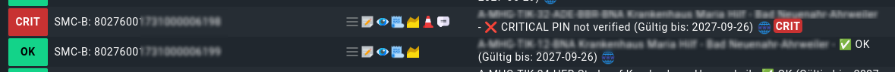

CheckMK Integration
Cocard verfügt über eine einfache Integration in CheckMK: über einen sogenannten Local Check lassen sich Konnektoren, Kartenterminals und Karten sehr einfach in CheckMK einbinden. Hier ein Beispiel für SMC-B-Karten:

Installation Plugin
Das folgende Beispiel geht davon aus, dass Cocard als Container auf einem Linux-System rootless unter dem User poddy läuft. Der Name des Containers - hier cocard - hängt ab von der Umgebung. Startet man Cocard mit dem docker-compose Quickstart heißt der Container compose_app_1 oder ähnlich. Ein podman ps (oder docker ps) zeigt die laufenden Container an.
#/bin/bash
su - poddy -c "podman exec -i cocard bin/rake checkmk:run" | egrep -v 'HBA:'Unter Linux ist der Pfad zum Plugin /usr/lib/check_mk_agent/local/cocard.sh.
Wie bei CheckMK local plugins üblich entspricht jede Zeile der Ausgabe einem separaten Service, den man in CheckMK erst inventarisiert, bevor der Service in CheckMK angezeigt wird.
Wer Docker nutzt, ersetzt podman durch docker.